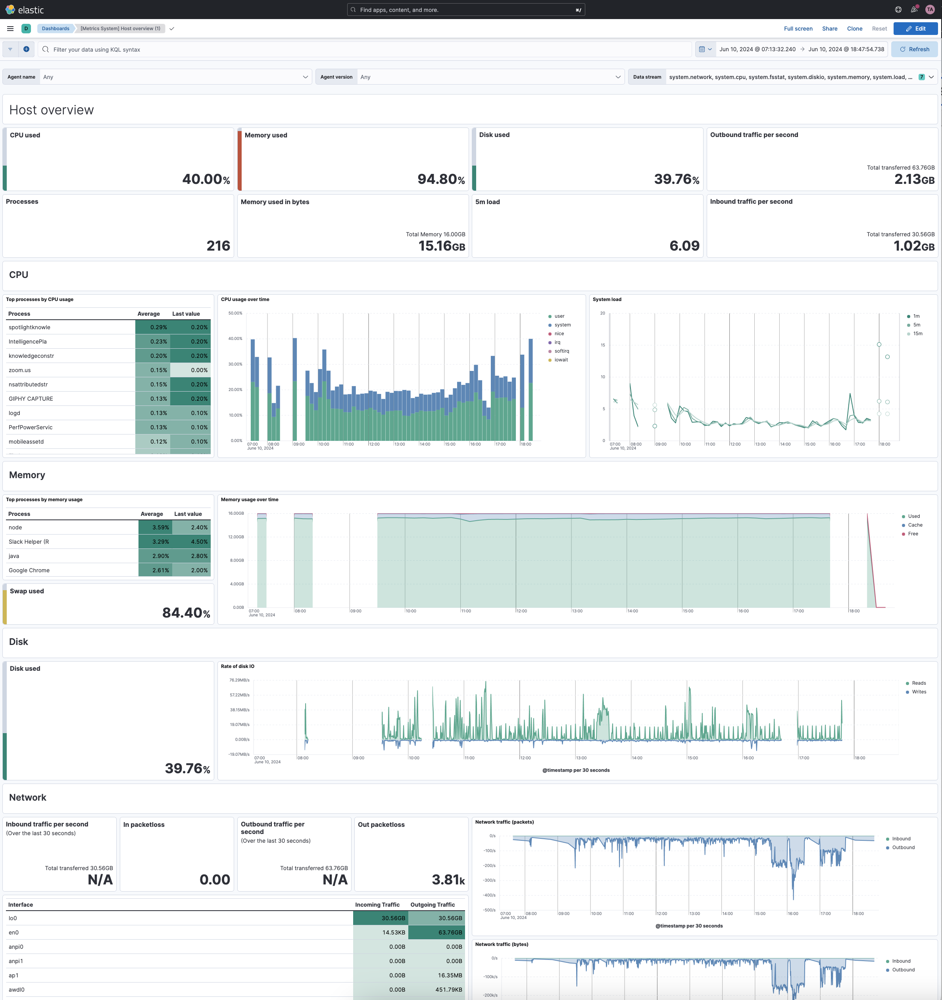

Dashboards
editDashboards are the best way to visualize and share insights from your Elasticsearch data.
A dashboard is made of one or more panels that you can organize as you like. Each panel can display various types of content: visualizations such as charts, tables, metrics, and maps, static annotations like text or images, or even specialized views for Machine Learning or Observability data.

There are several panel editors in Kibana that let you create and configure different types of visualizations.
At any time, you can share a dashboard you’ve created with your team, in Kibana or outside.
Some dashboards are created and managed by the system, and are identified as managed in your list of of dashboards. This generally happens when you set up an integration to add data. You can’t edit managed dashboards directly, but you can duplicate them and edit these duplicates.